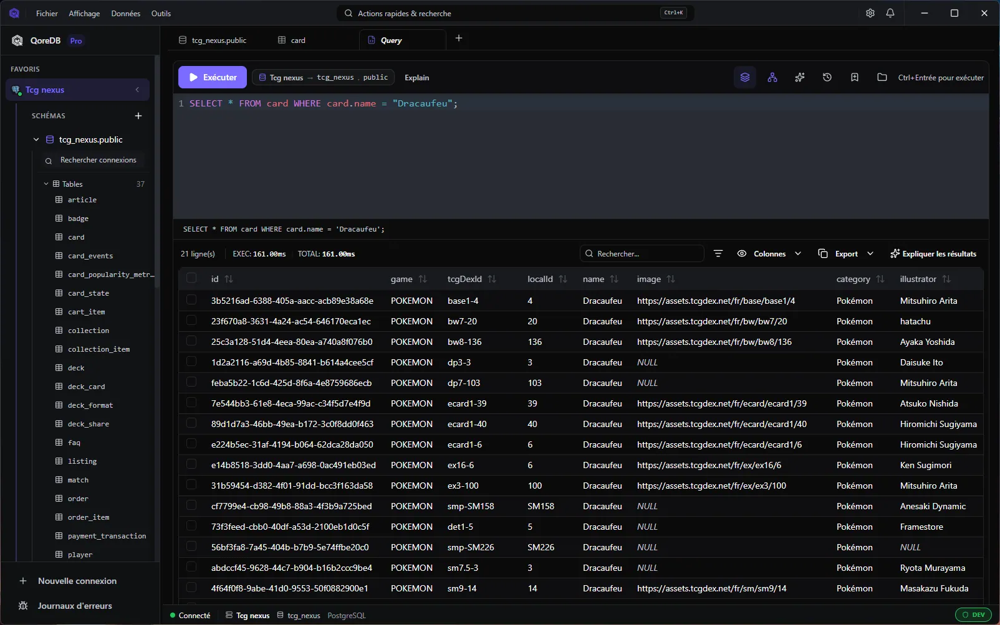

01 / CLIENT DESKTOP · SQL + NOSQL
Vos bases.
Un espace
de travail.
Explorez, interrogez et modifiez vos données dans une interface pensée pour garder le contrôle.
macOS · Windows · Linux / Core gratuit
VOTRE ESPACE DE TRAVAILSQL / 01

Le contexte reste à portée de vue.↗

PLUSIEURS MOTEURS.
LES MÊMES REPÈRES.
PostgreSQLMySQLMongoDBRedisSQLite
Toutes les compatibilités 02 / DANS LE DÉTAIL
Un outil se juge
dans le travail quotidien.
01 — EXPLORER & INTERROGER CORE
Suivez vos idées.
Gardez le fil.
Parcourez une table, écrivez votre requête, inspectez les résultats. Vos connexions et vos données partagent le même espace.
- 01
- Choisir sa connexionLe contexte de travail est explicite.
- 02
- Écrire et exécuterL’éditeur et les résultats se répondent.
- 03
- Inspecter les donnéesUne grille pour lire, filtrer et explorer.
PLANCHE DE RÉFÉRENCE · HORS SITE PUBLIC
Calme dans la forme.
Précis dans le détail.
Fond
Surface
Relief
Action
Inter / Space Grotesk · Grille 12 colonnes · Filets 1 px · Espacements base 4 · Mouvement sur action uniquement